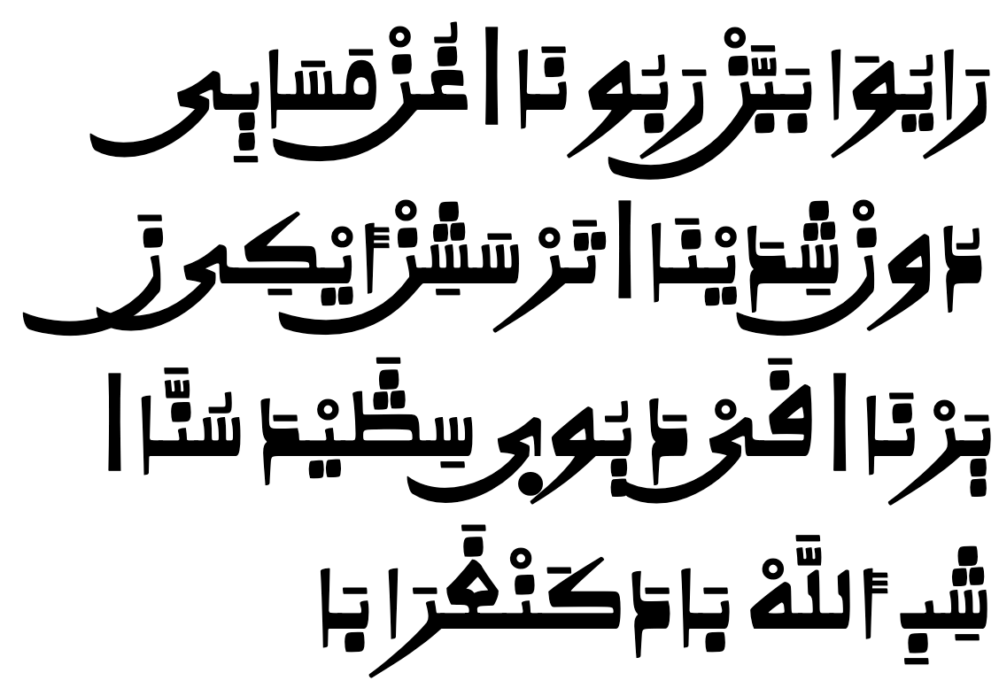
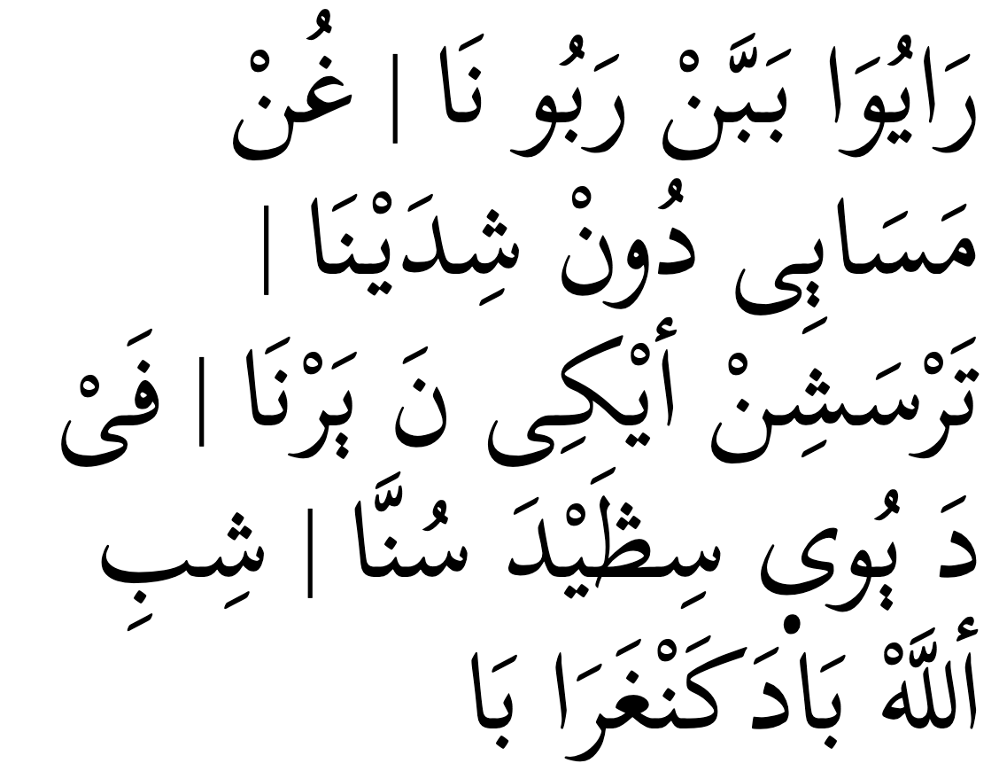

This page brings together basic information about the Arabic script and its use for the Hausa language. It aims to provide a brief, descriptive summary of the modern, printed orthography and typographic features, and to advise how to write Hausa using Unicode.
Hausa has a long tradition of writing in the Arabic script, however various styles have been developed. Two major orthographies are Warsh (a north African variant), and Hafs (much closer to the Arabic used in Egypt and the Gulf). Additionally, the Qur'an and other religious materials are written in Arabic, using the standard Arabic spellings, and these spellings often carry over to the many Arabic loan words in Hausa. On top of that, spelling is not standardised, and is often idiosynchratic to a given author.
Here we focus on the Warsh orthography used for Hausa, and with the Kano styling, although references are made from time to time to the Hafs spelling. Comprehensive sources are difficult to find, so this information reflects what information was found.
Note: Due to the difficulty in finding lists of Hausa words written in ajami that are associated with pronunciation information, most of the examples shown here are transcribed from terms in the Latin Boko orthography. It may be possible to find alternative spellings of such examples.
Hausa can be written in the Latin script, but also (less commonly) using the Arabic ajami script. Use of ajami tends to be restricted to Muslim contexts.
There is a good deal of variation in the orthography for Hausa ajami, and no official standardisation. It should be borne in mind that while this page adopts a particular set of characters based on the Warsh variants as most representative of the orthography, and describes alternative characters under the label of 'infrequent', this is not necessarily representative of the orthography used in certain regions or contexts, especially outside the area around northern Nigeria.
For information about the script in general, see the Arabic overview.u
Orthographic development & variants
Hausa has been written in ajami since at least the early 17th century.whl
There is no standard system of using ajami for Hausa, and different writers may use letters with different values.whl
There are or have been a number of variant practices for writing Hausa ajami. There are also some confusable characters. They include the following:
There is some variation in sources about the use of
ی [U+06CC ARABIC LETTER FARSI YEH]
versus
ي [U+064A ARABIC LETTER YEH].
Most sources seem to agree, however, that the iː uses
ى [U+0649 ARABIC LETTER ALEF MAKSURA] ,
whereas the end of a diphthong or the consonant j uses one of the former. However, some sources show YEH instead of FARSI YEH for medial forms. They only differ in that the isolate and final forms of FARSI YEH have no dots, ie.
ییی
vs.
ييي
Unicode policy for the Arabic script is to encode fully precomposed characters rather than to use combining characters for ijam. Therefore, it is inappropriate to use
ۛ [U+06DB ARABIC SMALL HIGH THREE DOTS]
(wagaf) to create characters such as
ڟ [U+069F ARABIC LETTER TAH WITH THREE DOTS ABOVE],
even though the Hausa consider the wagaf to be a modifier letter rather than part of the base character.lpp
The wagaf may appear above or below the base, but Unicode standardises on above.
The characters with wagaf that are based on characters with a dot above the base retain that dot as well as the three dots of the wagaf. For example, ࣃ is completely different from the character
ڠ [U+06A0 ARABIC LETTER AIN WITH THREE DOTS ABOVE],
even though the difference is visually subtle.
The difference between
ن [U+0646 ARABIC LETTER NOON]
and
ࢽ [U+08BD ARABIC LETTER AFRICAN NOON]
comes down to the absence of dots associated with a character in final position, ie.
ن ننن
vs.
ࢽ ࢽࢽࢽ In medial position, the two contrasting characters look identical.
The Arabic script is an abjad. This means that in normal use the script represents only consonant and long vowel sounds. However, since Hausa ajami normally shows all the vowel diacritics, it actually functions as an alphabet. See the table to the right for a brief overview of features for Hausa using the Arabic script.
Hausa uses two principal types of writing: Hafs (Ḥafṣ) orthography uses characters that look and behave more like Standard Arabic, whereas the Warsh (Warš) orthography changes the shape of some letters, and drops the dots associated with others in certain positions.
The Warsh orthography is typically written using a particularly African font style called Kano. ❯ writing_styles
The Warsh orthography for Hausa has 24 basic consonants plus 3 more used to express labialised and palatalised consonants. The usage of the last 3 is not fully standardised. 15 more consonants are available in the extended repertoire. ❯ consonants
Typical visual differences between the Warsh and Hafs orthographies relate to the absence of dots in some positions, and the placement of dots relative to the base. These differences are produced by using different code points.
Hausa ajami is an alphabet where vowel sounds are written using a mixture of combining marks and letters. Unlike Semitic languages such as Arabic that build words on consonant patterns and so normally hide vowel diacritics in the Arabic script, it can be difficult to read Hausa text without the full vowel information, and therefore Hausa retains all vowel diacritics in the text.
The way a given vowel is written depends on its joining behaviour (initial, medial, or final). In some cases a vowel is written using just a diacritic, in others it is via combinations of letters and diacritics. Most of the letters also double as consonants. 7 combining marks are used to write vowels, and 7 letters, only 1 of which is a dedicated vowel letter. ❯ vowels
Hausa also has more vowel sounds than Arabic, so some additional conventions are necessary to cover those. Mostly these adaptations follow the North African, magrebi approach.
Because the Arabic script is 'cursive' (ie. joined-up) writing, letters tend to have different shapes depending on whether they join with adjacent letters or not (see cursive). In addition, vowels can be represented using different characters, depending on where in a word they appear.
In scripts such as Arabic, several characters have no left-joining form. In what follows we'll use the characters ي and د to illustrate shapes. The former can join on both sides, but the latter can only join on the right.
Left-joining glyphs are commonly called initial; dual-joining are called medial; and right-joining are called final. Glyphs that don't join on either side are called isolated. However, these glyph shapes can be found in various places within a single word.
Word-initial characters usually have initial glyph shapes (eg. 064A ). However, characters that only join to the right will use an isolated glyph shape (eg. 062F ).
Furthermore, words beginning with a vowel are always preceded by a vowel carrier, which is normally ا
(eg. 0627 06CC or 0627 064E ).
Word-medial characters will typically join on both sides
(eg. 064A ) but those that only join to the right will use a final glyph (eg. 062F ).
However, if either of those is preceded by another character that only joins to the right, the glyph shapes rendered will be initial (eg. 064A )
and isolated (eg. 062F ), respectively.
Word-final characters will typically use a final glyph shape (eg. 064A and 062F ).
However, if the previous character joins only to the right, they will use isolated glyph shapes (eg.064A and 062F ).
In all this contextual glyph shaping the basic shapes used for a character can vary significantly in a script like Arabic. This also includes some characters that only have ijam dots in certain contexts.
Click on the sounds to reveal locations in this document where they are mentioned.
Phones in a lighter colour are non-native or allophones.
Vowel sounds
Plain vowels
Diphthongs
Consonant sounds
labial
dental
alveolar
post-
alveolar
retroflex
palatal
velar
glottal
stop
b ɓ
td ɗ
kɡ kʷɡʷ kʼkʷʼ kʲkʲʼgʲ
ʔ
affricate
t͡sʼ
t͡ʃd͡ʒ
fricative
f fʲ
sz
ʃʒ
h
nasal
m
n
approximant
w
l
j j̰
trill/flap
ɾ
ɽ
Tone
Hausa is a tonal language. Each of its five vowels may have low tone, high tone or falling tone.whl
Structure
Hausa has 3 syllable types: CV, CVV, and CVC, where VV can be a long vowel or a diphthong.bc The long vs. short vowel distinction is phonemically important, however when a syllable with a long vowel acquires and final consonant, the vowel is shortened.
Consonant clusters may occur where syllables are side by side, but not within a syllable. Gemination is, however, a distinctive feature.bc
Semivowels ʷ and ʲ may occur after an initial consonant.
Vowels
More vowel details
The characters used to write a vowel depend on which joining form is being used, as well as the vowel length. The following table summarises the main vowel to character assignments. More information can be found by clicking on the characters in the list box below, or in the section vowel_mappings.
In word-initial position vowels are attached to a consonant letter that indicates a glottal stop. Although this actually constitutes a consonant plus vowel, the appropriate letter changes depending on the vowel. The table therefore shows these maximal combinations.
iإِ◌ِ◌ِ iːىِٕ◌ِى◌ِى
uعُ◌ُ◌ُ uːعُو◌ُو◌ُو
eعٜ◌ٜ◌ٜ eːىٰٜ◌ٜىٰ◌ٜىٰ
oعُ◌ُ◌ُ oːعُو◌ُو◌ُواْ
aأَ◌َ◌َ aː?◌َا◌َا
ai
au
◌َیْ◌َیْ
◌َوْ◌َوْ
Hausa vowels.
Observation: Need to check whether initial iː is written
ىِٕ
or whether it should be
إِى.
Same for eː.
Observation: It appears to be very unusual for sounds other than a or i to appear at the start of a word.
Observation: It is very difficult to find information in the sources consulted, but my conclusion is that what would be an initial form of a vowel letter in Standard Arabic is normally written in Hausa by combining the usual vowel diacritic with a carrier, such as أ [U+0623 ARABIC LETTER ALEF WITH HAMZA ABOVE] or ع [U+0639 ARABIC LETTER AIN]. Where i don't have other information, these 'initial' forms are shown using AIN in the table.
The full set of characters needed to represent the Hausa vowels is the following. This set includes the glottal stop consonants shown above. See also standalone.
Hausa uses the following consonant characters to write long vowels in combination with diacritics.
ا␣و␣ی
In a standard Arabic orthography these characters would be regarded as matres lectionis, but since Hausa shows all vowel diacritics they don't have the same role here. Instead, they form part of a composite that distinguishes one vowel from another (see compositeV).
أ␣إ␣ع
The letters just above are used as vowel carriers (see standalone) and represent the glottal stop. In general, that makes them ordinary consonants. However, given that the first 2 appear only as carriers of vowels in word-initial position, it could perhaps be argued that they are part of a multipart vowel arrangement along with the following diacritic(s).
The 5 multipart vowels listed here all indicate long versions of the vowels. The vowel diacritic is followed by a letter (and in 2 cases, additional characters). Diphthongs and glides are not included here, and nor are word-initial clusters.
Click on the letters for examples.
ِى␣ُو␣ٜىٰ␣ُواْ␣َا
Standalone vowels
The syllable structure described in structure requires all syllables to begin with a consonant, so there are no true standalone vowels in Hausa. The closest one gets is a word that begins with one of the following characters representing a glottal stop.
أ␣إ␣ى␣ع
These letters are followed by the relevant vowel characters, as shown in fig_vowelgrid.
أَغَدٜ
إِسْکَا
Observation: Need to check whether iː is written
ىِٕ
or whether it should be
إِى.
Same for eː.
Vowel length
Long vowels are indicated using one of 0627, 0648, or 0649 after the vowel diacritic. See fig_vowelgrid.
Long vowel oː appears to also add اْ in final position, which is the only time it is distinguished from uː.
Nasalisation
Nasalisation is indicated by a syllable-final -n in the Latin orthography. There is a report that the tanwin diacritics are used for this in the ajami orthography, but this needs to be confirmed.
Tones
Although Hausa is a tonal language, the tone values are not written in ajami.
Vowel sounds to characters
Tables in this section show how Hausa vowel sounds commonly map to characters or sequences of characters in the Arabic orthography. i indicates word-initial, m medial, and f final forms. Click on the character names to see examples.
Plain vowels
Per the rules for syllable structure in Hausa, vowels are always preceded by a consonant, and where no consonant is written before a vowel in the Boko orthography that consonant is an unwritten glottal stop.
The right-hand column shows additional characters that may be used to write Hausa ajami, including some used for the Hafs orthography, and others used in borrowed words, or text written by speakers who don't make the phonemic distinctions in the table. They are not used for the Warsh orthography.
These characters are a basic set used for the Warsh orthography. See also labpal.
ب␣ݑ␣ت␣د␣ط␣ک␣ࢼ␣غ␣عث␣جࢻ␣س␣ڟ␣ز␣ش␣حم␣ࢽو␣ر␣ل␣ی␣ۑ
ب, د, and ک may be used for glottalised sounds as well as normal sounds.
Labialised & palatalised consonants
ݣ␣ࣃ␣ࣄ
Three consonant sounds in syllable initial position can be labialised ʷ or palatalised ʲ. They depend on an initial base consonant with a 3-dot diacritic, which may or may not be followed by و [U+0648 ARABIC LETTER WAW] or ی [U+06CC ARABIC LETTER FARSI YEH].
There is little information available about how these characters are used, and some ambiguity in what there is.
Warren-Rothlinaww says the following about these characters.
The labialized and palatalized velars /ɡʷ/ and /ɡʲ/, /kʷ/ and /kʲ/, and /ƙʷ/ and /ƙʲ/ are usually not written, e.g. کْي ⟨k⁰y⟩ and کْو⟨k⁰w⟩, as one might expect, but کِي ⟨kiy⟩ or کُو ⟨kuw⟩, and even with the following vowel sound intervening (e.g. کَو⟨kaw⟩ for /kwa/). As noted above for other distinctive Hausa sounds, three dots usually smaller than standard nuqaṭ may be added above for labialization and below for palatalization (e.g. ⟨k₃aw⁰taʾ⟩ kyauta).
Rather than provide characters with triple dots above and others with triple dots below, Unicode is standardising on above.
Looking at the samples in the Unicode proposallpp, there seem to be two different forms for each. It isn't clearly indicated (especially since the boko transcription doesn't indicate vowel length), but I find myself wondering whether they reflect the difference between long and short vowels. Here are some examples. Compare the top and bottom items for each bullet.
ࣃُودَĝuwdagwadaࣃُمْࢽَĝum͓nagwamna
ࣄُورَیْƙ̂uwray͓ƙwaraiࣄُثٜىٰƙ̂uʧeıˈƙwace
ࣄُیَاƙ̂uyaɑƙyuyaࣄَالْلّٜىٰƙ̂aɑl͓l˖eıˈƙyalle
Universität Wien's document also shows it being used alone, eg. ݣَاشٜىٰ
See a list of words (in the Boko orthography) using ʷ or using ʲ.
Other consonants
The following are additional characters that may be used to write Hausa ajami, including some used for the Hafs orthography, and others used in borrowed words, or text written by speakers who don't make the phonemic distinctions in the table above.
ك␣ٻ␣ق␣ف␣پ␣ص␣ذ␣ظ␣ه␣ن␣ض␣ؿ
Dot variants
A typical feature of the Warsh orthography is that a character has dots in initial or medial positions, but none in final or isolate. Another is that the dots appear on the other side of the base in some characters from the side they would appear in the Hafs orthography. These differences are represented in Unicode by the use of different characters. They include the following.
The other two characters have a triple-dot addition which is associated with glottalised consonants in the Warsh orthography. (They don't appear to have glyphs in the webfont used.)
Vowel absence
ْ
Hausa uses
ْ [U+0652 ARABIC SUKUN]
to indicate that there is no vowel after a consonant. Vowel absence is usually marked (unlike Standard Arabic), including over the YEH or WAW that signal the final part of a diphthong.
حَࢽْتَا
حَیْرَࢽْ
Onset consonants
tbd
Final consonants
tbd
Consonant clusters
Consonant clusters are not particularly common, but they are written by adding a sukun over the non-final consonant sounds.
Tables in this section show how Hausa consonant sounds commonly map to characters or sequences of characters in the Arabic orthography. Click on the character names to see examples.
There is no official standard for how to write African languages in ajami, and there has been a good deal of variation over the history of the writing.dbs In addition, dialects of Hausa have different phonemic repertoires, which are reflected in their writing. So there is some variation as to which characters are mapped to which sounds, and the sets described here are a synthesis of sources describing modern usage.
The typical orthography is based on Warsh (Warš) forms, which incorporate Maghribi characteristics, and are often written with Kano style glyphs (as here). Some sources describe an alternative Hafs (Ḥafṣ) orthography, used with hand-written adaptations for the newspaper Al-Fijir.
Additional alternative shapes also occur, typically used for borrowed words, or because sounds are not differentiated in some regions. These are preceded by an asterisk in the table. (Warren-Rothlinaww lists a handful of other, less commonly attested shapes, but they are not listed here.)
In some cases the triple dot (known as wagaf) may be written by some below the base and by others above the base, but Unicode is standardising on glyphs that show it above.
ك [U+0643 ARABIC LETTER KAF] and ک [U+06A9 ARABIC LETTER KEHEH] look the same in the Kano webfont used for this page, but represent different underlying characters. In a non-Kano font, the difference is in the shape of the final position glyph, ـك vs. ـک, respectively.
Evans & Warren-Rothlinlpp associate this sound with ࢼ [U+08BC ARABIC LETTER AFRICAN QAF] for the Warsh variant, as do others, but Warren-Rothlinaww lists what appears to be ڧ [U+06A7 ARABIC LETTER QAF WITH DOT ABOVE] for this sound (although it could be an incorrect attribution, given that the former has a dot over initial/medial forms).
ك [U+0643 ARABIC LETTER KAF] and ک [U+06A9 ARABIC LETTER KEHEH] look the same in the Kano webfont used for this page, but represent different underlying characters. In a non-Kano font, the difference is in the shape of the final position glyph, ـك vs. ـک, respectively.
The usual form is ح [U+062D ARABIC LETTER HAH]. For Quranic names, ه [U+0647 ARABIC LETTER HEH] is generally used, but both can sometimes also be used interchangeably, eg. حَوْسَا or هَوْسَا.aww
The Arabic script uses a large number of Unicode characters that affect the way that other characters are rendered. Many of those have no visible form of their own.
Modern Arabic-script text makes use of a relatively large set of invisible formatting characters, especially in plain text, many of which are used to manage text direction. For more details, see the Arabic overview.
Numbers, dates, currency, etc
Need to confirm whether Hausa uses the following digit forms.
This section brings together information about the following topics:
writing styles;
cursive text;
context-based shaping;
context-based positioning;
baselines, line height, etc.;
font styles;
case & other character transforms.
The kano writing style is a common way of writing Hausa, especially in Northern Nigeria, in the ajami script, and like other East African writing it is based on Warsh (Warš) forms, which incorporate Maghribi characteristics. Text written in the Kano style will include glyphs for a number of African characters that may not be available in the average naskh font.

Hausa may be written in the Kano style.

The same text, written in a standard naskh writing style.
Another orthography, that looks much closer to naskh, is used with hand-written adaptations for the newspaper Al-Fijir, and is based on the Hafs orthography, but when writing in that orthography you need to use different code points from those used for the Kano style.
Font styling & weight
tbd
Observation:Panels of text in a Tamil newspaper that uses oblique fonts, but all the body text of the panel uses that font. Other fonts used for the body text in other articles tended to also have a slight lean, though not as much. The verticals in headings tend to be upright.
Graphemes
Grapheme clusters
tbd
Punctuation & inline features
Word boundaries
Words are separated by spaces.
Phrase & section boundaries
،␣.␣؟␣!
Hausa uses a mixture of ASCII and Arabic punctuation.
Hausa texts typically use guillemets around quotations, but some texts may use quotation marks instead. Of course, due to keyboard design, quotations may also be surrounded by ASCII double and single quote marks. Note, however, that the order of use is different from that in LTR text, because they are not automatically mirrored.
This section looks at ways in which spacing is applied between characters over and above that which is introduced during justification.
Baselines, line height, etc.
tbd
Hausa ajami uses the so-called 'alphabetic' baseline, which is the same as for Latin and many other scripts.
Counters, lists, etc.
tbd
Styling initials
tbd
Page & book layout
This section is for any features that are specific to thisScript and that relate to the following topics:
general page layout & progression;
grids & tables;
notes, footnotes, etc;
forms & user interaction;
page numbering, running headers, etc.